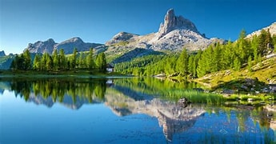

Big Wave Surfing

What is big wave surfing?
Big wave surfing is a discipline within surfing in which experienced surfers paddle into, or are towed into,
waves which are at least 20 feet (6.2 m) high, on surf boards known as "guns" or towboards.
Sizes of the board needed to successfully surf these waves vary by the size of the wave as well as the technique
the surfer uses to reach the wave. A larger, longer board allows a rider to paddle fast enough to catch the wave
and has the advantage of being more stable, but it also limits maneuverability and surfing speed.
The bigest waves in the world
- Nazare, Portugal
- Jaws, Maui, Hawaii
- Teahupo’o, Tahiti
- Mavericks, California
- Shipstern’s Bluff, Tasmania
- The Right, Western Australia
- Nazare, Portugal
- Jaws, Maui, Hawaii
- Teahupo’o, Tahiti
- Mavericks, California
10 Biggest Waves In The World
10 Biggest Waves In The World

In 1992, big wave surfers such as Laird Hamilton and Darrick Doerner introduceda cross over sport called tow-in surfing.
While many riders still participate in both sports, they remain very distinct activities. This type of surfing involves being
towed into massive waves by jet ski, allowing for the speed needed to successfully ride. Tow in surfing also revolutionized
board size, allowing surfers to trade in their unwieldy 12 ft. boards in favor of light, 7 ft boards that allowed for more
speed and easier maneuverability in waves over 30 ft. By the end of the 1990s, tow in surfing allowed surfers to ride waves
exceeding 50 ft
One of the greatest dangers is the risk of being held underwater by two or more consecutive waves.
Surviving a
triple hold-down is extremely difficult, and surfers must be prepared to cope with these situations